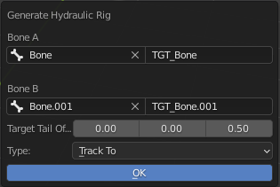

Generate Hydraulic
Edit Armature |
Pose |
This Operator Takes Two Bone, Create Target Bone, and Use Constraint to Track to Each Other
It Automatically Takes Active Bone as the First Bone, and the first Selected Bone in the index that is not the Active Bone as the second bone
Bone A: First Bone
A Target Name: First Bone’s Target Bone’s Name
Bone B: Second Bone
A Target Name: Second Bone’s Target Bone’s Name
Target Tail Offset: Vector that Offset Tail from Bone Head
Type: Type of Track To Constraint to Use
Lock Axis (Locked Track Only): Locked Axis for the Locked Track Constraints
Info
Just Select Two Bone and Run the Operator, The Bone Selection in the Pop Up is just for you to Make Correction for the Bone Selection